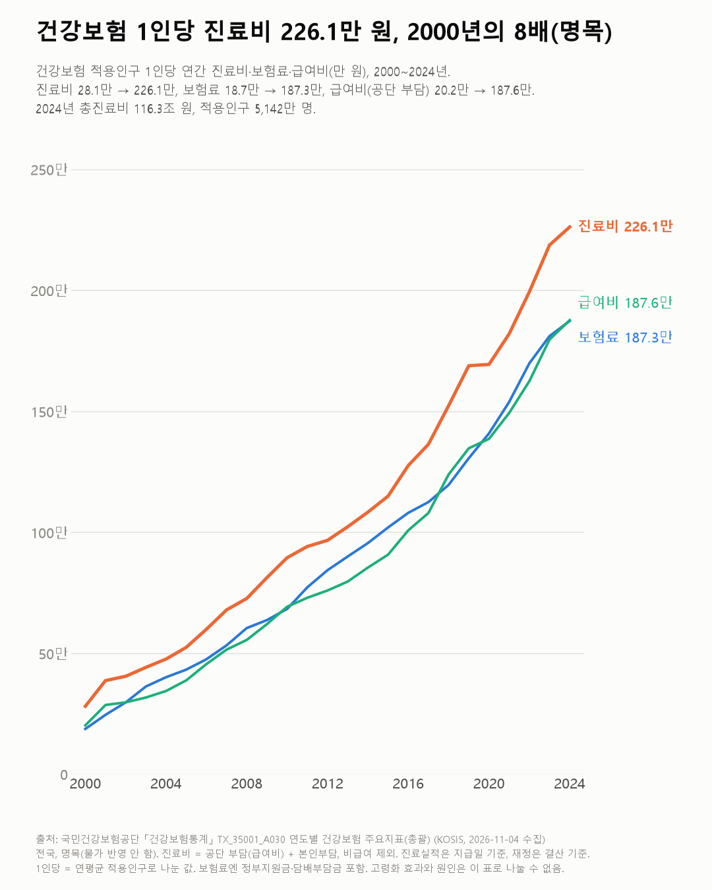
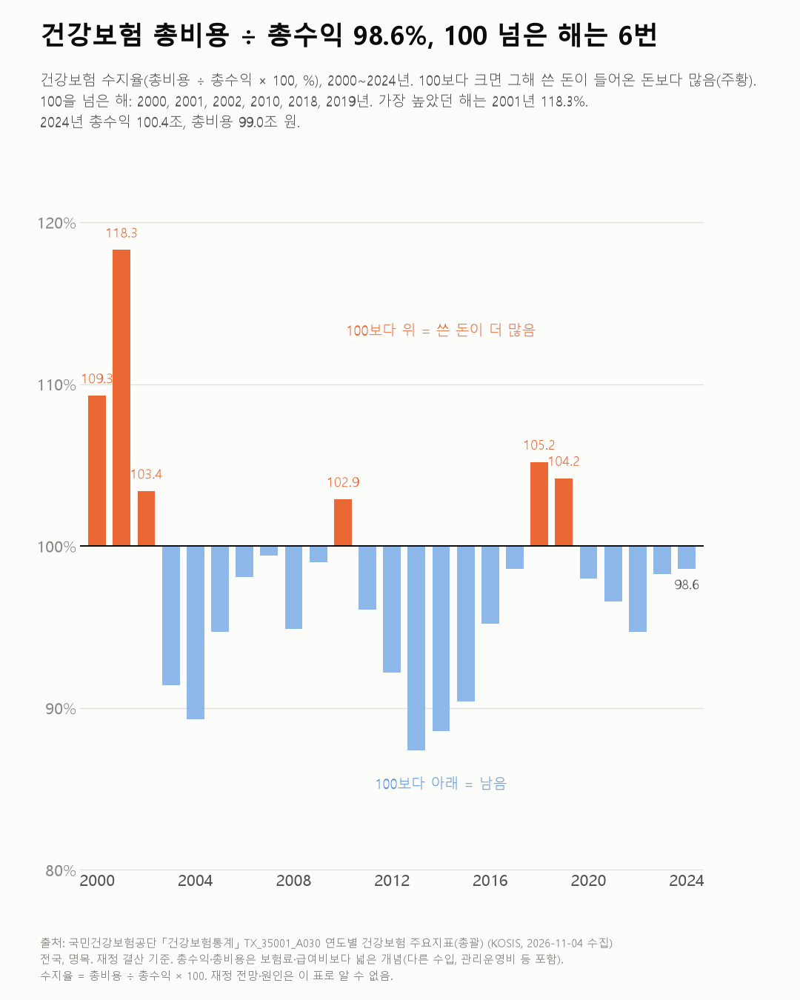

한 사람 진료비, 2000년의 8배가 됐어요
한 사람이 1년에 쓰는 진료비가 크게 늘었어요. 지금은 내는 보험료와 공단이 내주는 돈이 거의 같아요.

- 2024년 한 사람 진료비는 226.1만 원으로, 2000년(28.1만 원)의 약 8배예요.
- 한 사람이 낸 보험료(18.7만 → 187.3만 원)와 공단이 내준 돈(급여비, 20.2만 → 187.6만 원)은 2024년엔 거의 같아졌어요.
- 2024년 건강보험은 들어온 돈의 98.6%를 썼어요.
2001년 건강보험은 들어온 돈보다 18% 넘게 더 썼어요. 수지율로 쓰면 118.3%, 이 표에서 가장 높은 해예요.
2000~2024년 가운데 100을 넘은 해는 여섯 번이에요(2000·2001·2002·2010·2018·2019년). 2024년은 98.6%로 들어온 돈보다 조금 덜 썼어요.
2024년 한 사람 진료비는 226.1만 원이에요. 2000년(28.1만 원)의 약 8배예요. 물가가 오른 만큼도 그대로 들어 있는 금액이에요.
같은 기간 1인당 보험료는 18.7만 원에서 187.3만 원, 1인당 급여비(공단 부담)는 20.2만 원에서 187.6만 원이 됐어요. 2024년엔 둘이 앞 세 자리까지 같더라고요.
급여비가 보험료보다 조금 많은데 수지율이 100보다 낮은 건 왜일까요? 총수익(100.4조 원)과 총비용(99.0조 원)엔 보험료·급여비 말고도 다른 수입과 관리운영비 등이 들어가서예요.

진료비가 늘어난 데 나이 든 사람이 많아진 영향이 얼마나 되는지는 이 표로 나눌 수 없었어요. 그게 가장 궁금하게 남았어요.
이 숫자는 어디서 왔나요
출처
기준일 2000~2024년(연간)이에요.
국민건강보험공단건강보험통계
- 연도별 건강보험 주요지표(총괄)KOSIS TX_35001_A030원본 보기
1인당 진료비·보험료·급여비, 총수익·총비용·수지율, 2000~2024
어떻게 셌나요
- 진료비는 공단이 내 준 돈(급여비)과 환자가 직접 낸 돈(본인부담)을 더한 거예요. 건강보험이 적용되지 않는 비급여 진료는 빠져요.
- 1인당 값은 한 해 평균 건강보험 적용 인구로 나눈 값이에요. 보험료엔 정부지원금·담배부담금이 들어가요.
- 진료 실적은 돈을 지급한 날 기준, 재정은 결산 기준이에요.
- 물가를 빼지 않은 그해 돈이에요. 1990·1995년은 일부 항목만 있어서 2000년부터 그렸어요.
한계 3가지
이 데이터로 말할 수 없는 것
- 고령화 효과(나이 든 사람이 많아짐)와 의료 이용 변화는 이 표로 나눌 수 없어요.
- 비급여 진료비는 빠져 있어 실제로 쓴 의료비 전체보다 작아요.
- 재정 전망·정책 평가는 하지 않아요. 노후 소득은 고령층 연금 글에서 다뤘어요.
새 글 나오면 받아 보기
피드 리더 앱에 이 사이트 주소를 한 번 넣어 두면, 새 글이 올라올 때 앱에 떠요. 가입이나 메일 주소는 필요 없어요.
받는 법 보기
- 피드 리더 앱을 하나 골라요. 새 글을 모아 보여 주는 앱이에요. 예를 들면 Feedly나 Inoreader가 있어요. 둘 다 무료고 웹·휴대폰에서 써요.
- 앱에서 '구독 추가'(+)를 누르고 아래 주소를 붙여 넣어요.
- 끝이에요. 새 글이 올라오면 앱 목록에 떠요.
https://protofu.github.io/opendata-insight/feed.xmlFeedly를 쓴다면 여기를 눌러 바로 추가할 수도 있어요.